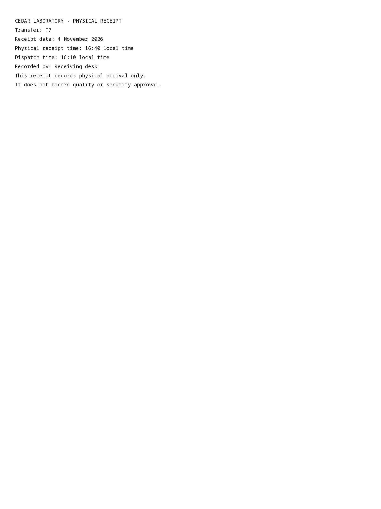

pdf-page-0001-raster.png
Published path: runs/15-native-revision-correct/extraction/D00004/attempt-74g3v3s5/pdf-page-0001-raster.png
Open / download original bytes

tmp/native-revision-exports/initial-correct/extraction/D00004/attempt-74g3v3s5/pdf-page-0001-raster.png · 98,762 bytes · SHA-256 0a83bc5212a56a25e948f5ce8803aee9b85558bd4d76db2f8d3a2817874571ae
